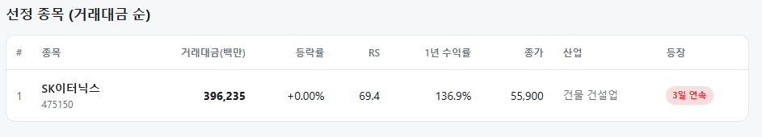
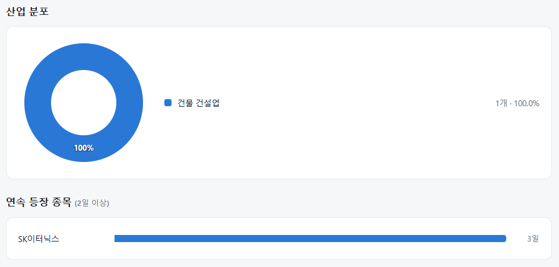

매일의 주도주 정리를 위해 기록합니다.
연속적으로 나온 종목들 또는 상승 후 조정받는 종목 위주로 리서치 해보시면 좋을 것 같습니다.

*오늘의 퀀트픽은 없습니다.
#주도섹터
반도체 메가 캡 및 로봇·피지컬 AI
주요 종목: 삼성전자(+6.56%), SK하이닉스(+4.14%), 에브리봇(+30.00%), 코스모로보틱스(+30.00% ), 이랜시스(+29.97% 상한가), 아진엑스텍(+23.06%).
분석: 반도체와반도체장비 업종이 +5.16% 상승한 가운데, 삼성전자(+6.56%)와 SK하이닉스(+4.14%)가 나란히 반등하며 코스피 지수 하단을 지지했습니다. 산업용/협동 로봇 테마(+5.58%) 및 피지컬 AI/휴머노이드 테마(+5.08%)로 유동성이 확산되며 에브리봇, 코스모로보틱스, 이랜시스 등 관련 종목들이 가격제한폭까지 상승 마감했습니다.
지주사 및 저PBR 복합기업
주요 종목: 삼성물산(+8.19%), 현대지에프홀딩스(+5.88%), 삼성생명(+4.81%).
분석: 복합기업 업종이 +4.75%, 생명보험 업종이 +4.39% 상승했습니다. 지수 안정화 국면에서 밸류에이션 매력이 부각된 지주사 및 금융 자산군으로 기관의 패시브 자금이 재유입되는 흐름이 관측되었습니다.
#조정섹터
개별 악재성 제약·바이오 및 시클리컬 품목
주요 종목: 삼천당제약(-29.92% 하한가), 코오롱(-28.72), 현대힘스(-7.92%).
분석: 시장 전체의 반등세에도 불구하고, 개별 수급 이슈가 불거진 삼천당제약이 가격제한폭(-29.92%)까지 하락했습니다. 지주사인 코오롱(-28.72%)과 조선 기자재인 현대힘스(-7.92%) 역시 개별 매물 출회로 인해 과락 흐름을 나타냈습니다.

코스피 지수는 +3.56% 상승한 6,747로 마감하며 하방 지지력을 확인했습니다. 대형주 중심의 코스피 200 지수 역시 +3.96% 상승한 1,073.39를 기록했습니다. 반면 코스닥 지수는 +0.49% 소폭 상승한 753.34로 마감하여 유가증권시장 대비 상대적으로 완만한 반등 흐름을 보였습니다.
유가증권시장에서 기관 투자자가 1조 3,741억 원, 외국인 투자자가 2,951억 원을 동반 순매수하며 지수 상승을 주도했습니다. 반면 개인 투자자는 1조 6,418억 원을 순매도하며 차익 실현 및 위험 관리 포지션을 취했습니다.
연속 종목으로 SK이터닉스(3회) 출현했습니다.
반등이 온다면 — 데드캣 바운스와 진짜 회복을 가르는 4가지 신호
지금 시장을 누르는 투매는 세 부류입니다. 개인의 공황 매도, 반대매매·기관 리밸런싱 같은 강제 매도, 그리고 레버리지 투매. 공통점은 가격을 보지 않고 판다는 것이고, 가격을 보지 않는 매도는 다 팔고 나면 끝납니다.
강제 매도 소진후에는 급반등
1990년, 증시 부양 실패로 코스피가 44% 폭락한 뒤 깡통계좌 일괄 강제 매도가 끝나자, 단 2주 만에 566에서 800선까지 40% 넘게 폭등했습니다. 호재가 아니라 팔 사람이 사라졌기 때문입니다. 1998년 외환위기, 2020년 팬데믹에서도 같은 순서가 반복됐습니다. 폭락 → 강제매도 소진 → 급반등.
호재 없이도 폭등하는 5가지 이유
앞으로 반등이 나온다면 경로는 다섯 가지입니다. ①강제 매도 소진에 따른 매도 진공, ②공매도 숏커버링, ③반값 인식의 저가 매수, ④정부 대책(규제완화·연기금), ⑤매도 압력 제거 자체가 만드는 기술적 폭등.
요컨대 반등의 본질은 '사자'가 아니라 팔 사람이 사라지는 것입니다.
되돌림 7,800선이 분기점
과거 반등은 통상 낙폭의 40~60%를 회복하는 선에서 1차 마무리됐습니다. 이번 낙폭에 적용하면 50% 되돌림은 7,800선(저점 대비 +20%)입니다. 여기까지는 기술적 반등의 통상 범위이고, 그 위부터가 추세 복귀의 시험대입니다. 급등이 시작되면 모든 상승이 추세 전환처럼 보이므로, 저항선은 머릿속에 그려놔야 합니다.
진짜와 가짜를 가르는 4가지 신호
① 빚이 청산됐는가 — 신용잔고가 급감해야 진짜입니다. 38조가 그대로면 반등 위에서 매물로 돌변합니다.
② 개미가 항복했는가 — 급락일 매수 실종이 진짜입니, 물타기 지속이면 가짜. 7월 20일 개인 매수가 직전의 1/10로 급감한 것은 항복에 가까워진 단서입니다.
③ 외국인이 돌아왔는가 — 며칠 숏커버링으로는 부족하고 조 단위, 2~3주 이상 연속 순매수여야 진짜입니다. 7월 20일 +0.5조 매수와 환율 1,480원대는 단서일 뿐, 연속성 확인이 먼저입니다.
④ 빅테크가 반전했는가 — 반도체지수 반등을 넘어 미국 빅테크까지 돌아서야 진짜입니다. 진앙이 돌지 않으면 국내 반등도 오래가지 못합니다.
결국 관건은 반도체의 구조적 성장
수급 꼬임 해소는 필요조건일 뿐, 반등이 추세가 되려면 반도체의 구조적 성장이 확인돼야 합니다. 체크포인트는 LTA의 '질' - 물량만 늘어나는 게 아니라 가격과 마진까지 유지되는가입니다.
이 조건이 충족되면 1차 저항 8,000선 돌파를 넘어 하반기 전고점까지 바라볼 수 있고, 마진 훼손 신호가 나오면 7,800선 부근이 반등의 상단이 될 수 있습니다.
유형별 대응, 그리고 지키는 투자
현금 확보자는 4가지 신호 확인 후 진입해도 늦지 않습니다. 물린 현물 보유자는 투매 국면 매도 금지, 반등에서 조절이 원칙입니다. 레버리지 보유자에게 반등은 버틸 이유가 아니라 정리의 기회이며, 비중을 가용 자산의 100% 이하로 낮춰야 합니다.
전재산을 잃는 패턴은 전형적입니다. 폭락일 투매 → 폭등일 뇌동매수 → 재하락 시 곱버스 진입 → 원금 상실. 그래서 원칙은 두 가지입니다. 폭락일에 팔지 않는다. 급등일에 쫓아가지 않는다. 매매 횟수를 줄이고 4가지 신호를 추적하며, 지키는 투자를 할 때입니다.
본 글은 유튜브 영상 <주가가 폭등해도 전재산을 잃는 이유>
(박종훈의 지식한방, https://www.youtube.com/watch?v=B0GdwToU14c) 의 내용을 참고하여 작성했습니다)
수급 꼬임 해소는 필요조건일 뿐, 반등이 추세가 되려면 반도체의 구조적 성장이 확인돼야 합니다. 체크포인트는 LTA의 '질' - 물량만 늘어나는 게 아니라 가격과 마진까지 유지되는가입니다.
이 조건이 충족되면 1차 저항 8,000선 돌파를 넘어 하반기 전고점 이상을 바라볼 수 있고, 마진 훼손 신호가 나오면 7,800선 부근이 반등의 상단이 될 수 있습니다.
미리 대응 시나리오를 생각해두신다면 투자자산을 현명하게 지켜나가실 수 있습니다.
오늘 하루도 수고하셨습니다.